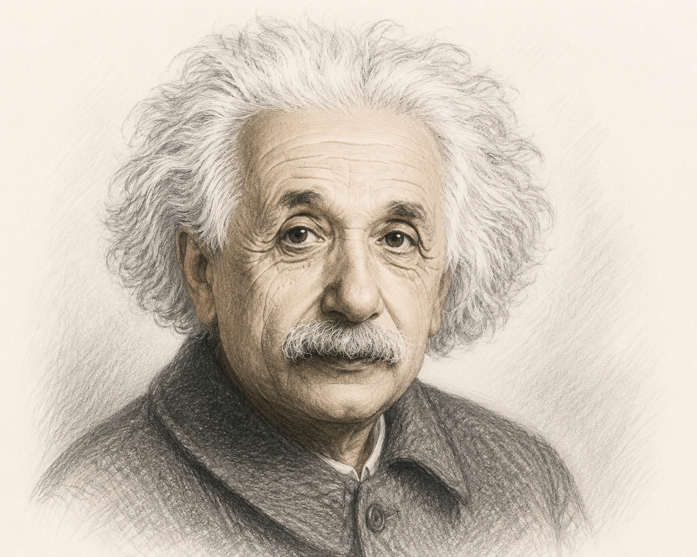

• Nêu những ấn tượng nảy sinh khi bạn nghĩ về khái niệm “cộng đồng”.
• Hãy chia sẻ những suy nghĩ chân thật về bản thân và niềm mong muốn về một môi trường sống có thể giúp bạn phát huy được năng lực của mình.
• Năm sinh - năm mất: 1879 – 1955.
• Quốc tịch: Nhà vật lí lí thuyết người Đức, trở thành công dân Mỹ năm 1940.
• Vị thế: Được nhìn nhận là một trong những nhà bác học vĩ đại nhất mọi thời đại, có tầm ảnh hưởng lớn lao trong nhiều lĩnh vực: khoa học, tư tưởng, tôn giáo và chính trị.
• Giải thưởng: Giải Nô-ben Vật lí năm 1921 cho những cống hiến đối với vật lí lí thuyết, đặc biệt là sự khám phá ra định luật của hiệu ứng quang điện và thuyết tương đối \(E = mc^2\).

Hình 1: An-be Anh-xtanh (h1.png)• Xuất xứ: Trích từ tiểu luận cùng tên trong tập sách "Thế giới như tôi thấy" (lần đầu công bố năm 1931 ở Đức, tái bản bổ sung năm 1955 ở Mỹ).
• Thể loại: Văn bản nghị luận tư tưởng / tiểu luận triết học - xã hội.
• Phương thức biểu đạt: Nghị luận kết hợp chặt chẽ giữa lí lẽ sắc bén, bằng chứng lịch sử và tư duy nhân văn sâu sắc.
Con người là sinh thể sống theo bầy. Hầu hết hoạt động, nhu cầu vật chất và tinh thần của cá thể đều gắn liền với cộng đồng: ăn thức ăn người khác trồng, mặc quần áo người khác may, sống trong nhà người khác xây, tiếp nhận tri thức và ngôn ngữ từ cộng đồng. Căn cước và ý nghĩa tồn tại của một cá thể phụ thuộc vào cộng đồng.
Mặc dù giá trị cá nhân phụ thuộc vào đóng góp cho xã hội, nhưng tài sản vật chất, tinh thần và đạo đức của cộng đồng đều do các cá thể sáng tạo đơn lẻ tạo dựng (người tìm ra lửa, trồng trọt, phát minh đầu máy hơi nước...). Chỉ có cá thể đơn lẻ mới có thể tư duy độc lập và đề ra quy phạm mới. Biển hiện của cộng đồng lành mạnh là sự gắn kết nội bộ đi đôi với tính độc lập của cá thể.
Thời đại hiện nay (đầu thế kỉ XX) có dân số tăng nhanh nhưng tỉ lệ người có tư chất thủ lĩnh giảm sút. Tổ chức hành chính thay thế cho vai trò cá nhân. Sự thiếu hụt cá tính diễn ra trầm trọng trong nghệ thuật (hội hoạ, âm nhạc xuống cấp), chính trị (thiếu người cầm lái, dân chúng mất độc lập tinh thần, dễ bị truyền thông thao túng dẫn đến chiến tranh mù quáng).
Bảng tổng hợp thực trạng các lĩnh vực theo Anh-xtanh:
| Lĩnh vực | Thực trạng biểu hiện | Hậu quả đối với cộng đồng |
|---|---|---|
| Kĩ thuật & Khoa học | Tổ chức máy móc thay thế vai trò cá nhân thủ lĩnh | Thiếu hụt các phát kiến mang tính đột phá độc lập |
| Nghệ thuật | Hội họa và âm nhạc xuống cấp rõ rệt | Đánh mất sự cộng hưởng sâu sắc trong công chúng |
| Chính trị & Xã hội | Mất tự do tinh thần, báo chí kích động mù quáng | Dung dưỡng chế độ độc tài, con người bị lôi kéo vào chiến tranh |
Anh-xtanh không bi quan. Ông coi sự suy tàn hiện tại chỉ là "chứng cảm cúm của trẻ con" trong giai đoạn phát triển quá nhanh của kĩ thuật và kinh tế. Nhờ sự phát triển kĩ thuật và phân công lao động có kế hoạch, con người sẽ được giải phóng sức lao động, có thêm thời gian dư rỗi để phát triển nhân cách, đưa cộng đồng khỏe mạnh trở lại.
Câu 1: Xác định nội dung trọng tâm của văn bản và các căn cứ xác định.
Câu 2: Tóm tắt những luận điểm cơ bản được triển khai trong văn bản.
Câu 3: Bằng chứng về sự phụ thuộc của cá thể và tư duy khác biệt của tác giả?
Câu 4: Lí lẽ khẳng định vai trò của các cá thể sáng tạo?
Câu 5: Đòi hỏi đối với mỗi cá nhân và cộng đồng trong mạch ngầm văn bản?
Câu 6 & 7: Tính thời sự của nhận định và Cơ sở niềm tin vào tương lai?
Viết đoạn văn (khoảng 150 chữ) nêu những điều bạn thấy cần nghĩ tiếp với An-be Anh-xtanh về vấn đề “Cộng đồng và cá thể”.
• Phương pháp giải thích từ: Trình bày khái niệm mà từ biểu thị, nêu rõ đặc điểm chung của loại và tính chất đặc thù của đối tượng.
• Ví dụ minh họa: Từ "Tượng đài" = Công trình kiến trúc lớn gồm một/nhóm tượng + đặt ở vị trí thích hợp + biểu trưng cho dân tộc/sự kiện lịch sử/người có công lớn.
An-be Anh-xtanh không chỉ là nhà vật lí thiên tài xây dựng nên Thuyết tương đối mở ra kỉ nguyên hạt nhân và vũ trụ học hiện đại, mà ông còn là một nhà tư tưởng hòa bình kiên trung. Tập tiểu luận "Thế giới như tôi thấy" tập hợp các bài viết, bài phát biểu và thư từ của ông, thể hiện quan điểm sâu sắc về tự do cá nhân, dân chủ, giáo dục và trách nhiệm nhân đạo của khoa học trước vận mệnh loài người.
Củng cố tri thức 10 câu hỏi mức độ Biết - Hiểu - Vận dụng thấp
Bài tập (Lập luận logic chuẩn đoán): Phân tích tính đúng/sai của mệnh đề logic sau:
"Nếu một cá nhân hoàn toàn cách ly khỏi cộng đồng thì cá nhân đó vẫn có thể sáng tạo ra các chuẩn mực đạo đức và ngôn ngữ mới cho xã hội."